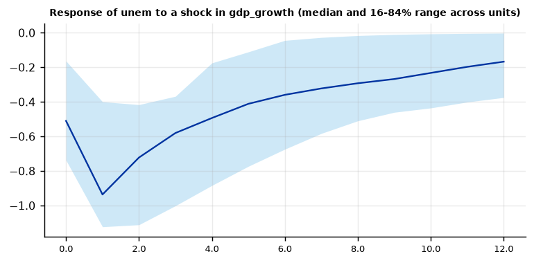
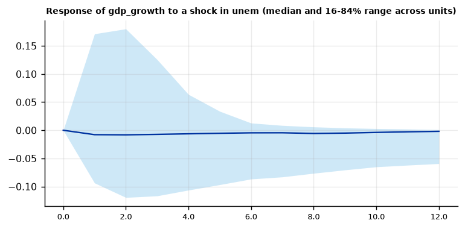
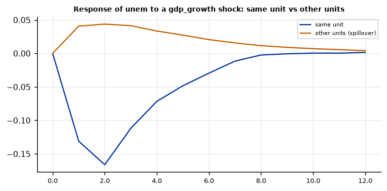

Run this model on your own data in Open Econometric Systems →
Step 1The question and the model
How do output growth and unemployment move together across rich countries, and are the dynamics the same everywhere? The data are 14 OECD countries observed for 25 years, 336 usable observations. Each country has the VAR
With one lag each country has 6 coefficients and 25 observations per equation: estimable, but noisy. Pool all countries and the noise averages out, at the price of assuming that every country has the same dynamics. A panel VAR is a choice on the line between these two extremes:
| Estimator | Idea | Use it when |
|---|---|---|
| OLS mean group (Pesaran-Smith) | Estimate each country separately and average | \(T\) is not too small, units differ, and you want the average effect with honest standard errors |
| Bayesian pooled | One set of coefficients for all units, Minnesota prior | Units are similar and you want the most precise estimate |
| Zellner-Hong random effects | Unit coefficients are drawn around a common mean, with a fixed amount of shrinkage \(\lambda_1\) | You want partial pooling and can set the shrinkage yourself |
| Hierarchical (Jarociński 2010) | Same, but the amount of shrinkage is estimated | You want the data to decide how alike the units are |
| Static factor (Canova-Ciccarelli) | Coefficients are sums of common, unit, variable and lag factors; all units' lags enter every equation | Countries influence each other and you want spillovers |
| Dynamic factor | Same, with factors that change over time | The relationships are unstable |
How to choose
Start with mean group and pooled: if they give similar answers, units are similar and the choice does not matter. If they differ, use the hierarchical model to let the data decide how much to pool (its shrinkage parameter is a measure of heterogeneity). Use the factor estimators when cross-country spillovers are the question, or the pre-tests show strong dependence between countries (Step 2). Report at least two estimators.
How to write it: the model
We estimate a panel VAR in GDP growth and unemployment for 14 OECD countries, 1966–1990, with one lag. To allow for heterogeneity across countries we use the mean-group estimator of Pesaran and Smith (1995), which averages country-specific VARs and computes standard errors from the dispersion of the coefficients across countries, and compare it with a Bayesian pooled estimator with a Minnesota prior, the Zellner-Hong (1989) random-effects estimator and the hierarchical prior of Jarociński (2010). Spillovers between countries are examined with the static and dynamic factor estimators of Canova and Ciccarelli (2009).
Step 2Load the data and pre-test
import numpy as np
import pandas as pd
import oes_engine as oes # pip install -e open-econometric-systems/oes-engine
data = open("garrett.csv").read()
df = pd.read_csv("garrett.csv")
print(df.groupby("country").size().describe().round(1)[["count", "min", "max"]])
print(df[["gdp_growth", "unem"]].describe().round(2).loc[["mean", "std", "min", "max"]])
spec = dict(vars=["gdp_growth", "unem"], unit="country", time="year", lags=1, estimator="mg")
r = oes.run("pvar", data, spec)
oes.show(r, "Panel unit-root")count 14.0
min 25.0
max 25.0
dtype: float64
gdp_growth unem
mean 3.25 4.99
std 2.43 3.24
min -4.30 0.68
max 12.80 13.00
Panel unit-root and cross-sectional dependence tests
Statistic p-value Detail
Test
Fisher ADF (Maddala-Wu): gdp_growth 131.3500 0.0000 14 units; H0: all units have a unit root
Pesaran CD: gdp_growth 21.3155 0.0000 mean |rho| = 0.449; H0: cross-sectional independence
Fisher ADF (Maddala-Wu): unem 22.4900 0.7583 14 units; H0: all units have a unit root
Pesaran CD: unem 34.4771 0.0000 mean |rho| = 0.723; H0: cross-sectional independence
Note: Stationary series are needed for a panel VAR in levels; strong cross-sectional dependence favours the factor estimators, which model spillovers between units.How to read it
Two tests, one per variable. The Fisher ADF test combines the unit-root tests of the 14 countries: GDP growth rejects a unit root (p < 0.001), but unemployment does not (p = 0.76): it is persistent, and a VAR in levels is an approximation. The Pesaran CD test rejects cross-sectional independence for both variables (mean absolute correlation 0.45 for growth and 0.72 for unemployment): countries share common shocks, such as the oil crises. This matters in two ways: standard errors that assume independent countries are too small, and the factor estimators of Step 7 are designed for this.
What to do about persistent unemployment: the VAR in levels with a persistent variable is common in the literature and consistent, but you should say so and check robustness with the variable in first differences, using a time-series transformation of your own data before loading it.
Step 3Choose the number of lags
oes.show(r, "Lag order")Lag order: BIC of the pooled VAR (common sample)
BIC (lower is better)
Lags
1 0.8488
2 0.7391
3 0.7504
4 0.8112
Note: BIC prefers 2 lag(s); the model uses 1.How to read it
BIC of the pooled VAR is lowest at two lags (0.739), against 0.849 for one lag and 0.750 for three. With 25 observations per country, one lag already costs six parameters per unit, so the guide uses one lag for the main results and two as a robustness check in Step 10. Report the BIC table, whichever lag length you choose.
Step 4Mean-group estimates
oes.summary(r)
oes.show(r, "Mean-group equation")Estimator: OLS mean group
Lags: 1
Units: 14
Periods: 25
Mean-group equation: gdp_growth
Mean Std. err. z Min over units Max over units
Regressor
const 2.3818 0.4965 4.7974 -1.1527 6.2006
L1.gdp_growth 0.2483 0.0468 5.3087 -0.1395 0.5616
L1.unem -0.0099 0.1014 -0.0977 -0.6179 0.7318
Mean-group equation: unem
Mean Std. err. z Min over units Max over units
Regressor
const 1.6456 0.1740 9.4561 0.6654 2.5704
L1.gdp_growth -0.1896 0.0229 -8.2705 -0.3604 -0.0440
L1.unem 0.8070 0.0216 37.4198 0.6907 0.9414How to read it
Each row is the average over the 14 country VARs, with the Pesaran-Smith standard error (the standard deviation across countries divided by \(\sqrt{14}\)); the last two columns show the smallest and largest country coefficient. Unemployment equation: unemployment is persistent (0.81, every country between 0.69 and 0.94) and falls when growth is high: a one-point increase in growth lowers unemployment next year by 0.19 percentage point (z = −8.3), negative in every one of the 14 countries (range −0.36 to −0.04). Growth equation: growth has modest persistence (0.25) and is not affected by lagged unemployment (−0.01, z = −0.1), but the country values range from −0.62 to +0.73, so the average hides large differences between countries.
Step 5Compare the estimators
def key_coefficients(res):
"""L1.unem and L1.gdp_growth in the unemployment equation; L1.unem in the growth equation."""
out = {}
for t in res["tables"]:
title = t["title"]
if title.endswith(": unem") and "equation" in title.lower():
f = oes.frame(t); out["unem <- own lag"] = f.loc["L1.unem"].iloc[0]; out["unem <- growth"] = f.loc["L1.gdp_growth"].iloc[0]
if title.endswith(": gdp_growth") and "equation" in title.lower():
out["growth <- unem"] = oes.frame(t).loc["L1.unem"].iloc[0]
return out
rows = {}
for est in ["mg", "pooled", "zh", "hierarchical"]:
rows[est] = key_coefficients(oes.run("pvar", data, dict(spec, estimator=est, draws=2000, burn=1000)))
print(pd.DataFrame(rows).T.round(3))growth <- unem unem <- own lag unem <- growth mg -0.010 0.807 -0.190 pooled -0.073 0.882 -0.125 zh -0.025 0.887 -0.137 hierarchical -0.088 0.840 -0.153
How to read it
Four estimators, three coefficients. All agree on the sign and the main picture: unemployment is persistent (0.81 to 0.89) and falls when growth rises (\(-0.13\) to \(-0.19\)), while lagged unemployment has little or a slightly negative effect on growth. They differ in size. The mean-group effect of growth on unemployment (\(-0.19\)) is about 50% larger than the pooled one (\(-0.125\)), and pooled persistence (0.88) is higher than mean-group (0.81). This is the pattern expected when slopes differ across units and a pooled estimator imposes a common value: dynamic coefficients are biased towards more persistence (Pesaran and Smith 1995). The hierarchical estimate sits between the two (\(-0.15\) and 0.84), which is what partial pooling should do. For growth on lagged unemployment, mean group finds nothing (\(-0.01\), standard error 0.10), while the pooled and hierarchical estimates are small and negative (\(-0.07\) and \(-0.09\)): this relationship is weak and not robust to the estimator, and should not be a headline result.
In a paper: report the mean-group estimate as the main result if the aim is the average effect and the units differ, show the others as robustness, and describe how they differ.
Step 6Impulse responses and variance decomposition
oes.plot(r, "Response of unem to a shock in gdp_growth", ncols=1, size=(6, 3))
oes.plot(r, "Response of gdp_growth to a shock in unem", ncols=1, size=(6, 3))
oes.show(r, "Forecast-error variance")Forecast-error variance decomposition (posterior median, %)
Horizon shock: gdp_growth shock: unem
Variable
gdp_growth 1 100.0 0.0
gdp_growth 4 99.6 0.4
gdp_growth 8 99.2 0.8
gdp_growth 12 98.9 1.1
unem 1 42.7 57.3
unem 4 75.5 24.5
unem 8 78.0 22.0
unem 12 78.9 21.1
Note: Share of each variable's h-step forecast-error variance due to each Cholesky shock.

How to read it
The response is to a one-standard-deviation growth shock (2.3 percentage points), with growth ordered first: unemployment may respond within the year, growth responds to unemployment only with a lag. The median country sees unemployment fall by 0.5 point on impact and by 0.9 point after one year (range across countries \(-1.1\) to \(-0.4\)), 0.5 after four years and 0.3 after eight; it has not quite returned to baseline after twelve (\(-0.17\)). Growth itself fades in two years (2.3, 0.5, 0.2). The response of growth to an unemployment shock is zero on average (\(-0.008\)), with country values from \(-0.09\) to +0.17.
The bands in this model are the 16th to 84th percentiles across countries, not estimation uncertainty: they measure heterogeneity. Say so under the figure.
Variance decomposition: growth shocks explain 43% of the forecast-error variance of unemployment at one year, 76% at four and 79% at twelve, while unemployment shocks explain under 1% of the variance of growth: in this panel, growth drives unemployment and not the reverse.
Step 7Spillovers between countries: the factor estimators
rs = oes.run("pvar", data, dict(spec, estimator="dynamic", draws=3000, burn=2000))
oes.show(rs, "MCMC")
oes.plot(rs, "Response of unem to a gdp_growth shock", ncols=1, size=(6, 3))MCMC convergence diagnostics
Effective sample size Efficiency (ESS / draws) Geweke z p-value
Parameter
own lag 964.0 0.321 0.158 0.8745
sigma2 United States:gdp_growth 2506.0 0.835 -0.165 0.8692
sigma2 United Kingdom:gdp_growth 2345.0 0.782 1.753 0.0796
sigma2 Norway:gdp_growth 2528.0 0.843 -1.956 0.0505
sigma2 Finland:gdp_growth 2381.0 0.794 1.044 0.2963
sigma2 Sweden:gdp_growth 2517.0 0.839 0.018 0.9853
sigma2 Belgium:gdp_growth 1101.0 0.367 0.157 0.8756
sigma2 Canada:gdp_growth 2268.0 0.756 0.447 0.6549
sigma2 Austria:gdp_growth 2190.0 0.730 -0.774 0.4390
sigma2 Japan:gdp_growth 2620.0 0.873 1.199 0.2307
sigma2 Italy:gdp_growth 2234.0 0.745 -1.217 0.2236
sigma2 West Germany:gdp_growth 1652.0 0.551 0.478 0.6325
Note: Geweke compares the first 10% with the last 50% of the chain: |z| > 1.96 suggests the chain has not settled; run more draws or a longer burn-in. ESS above about 200 gives reliable posterior means and bands. Lowest efficiency: 0.321.
How to read it
The factor estimators let every country's equation include the lags of all countries and report the effect of a growth shock in one country on the same country and on the other countries (average per country). Convergence first: with 3000 draws after 2000 burn-in the effective sample size of the own-lag factor is 964 and all Geweke statistics are below 2 in absolute value (with the default 1000 draws and 500 burn-in it was 181 and the statistic was \(-4.6\): do not use the defaults for the dynamic model).
The responses: a shock to growth in one country lowers its own unemployment by 0.13 to 0.17 over the next two years, and moves other countries' growth by \(-0.04\) (3% of the domestic growth response of 1.2 after a year) and their unemployment by +0.04 (about a third of the domestic fall of 0.13, with the opposite sign). Spillovers are small and their sign is not stable across estimators: the static version gives \(-0.01\) to \(-0.02\) for the unemployment spillover. Two cautions. First, these estimators assume uncorrelated shocks, so there is no contemporaneous effect by construction, although the CD test in Step 2 shows strong correlation between countries. Second, the own-country response of unemployment is much smaller than in the mean-group model because the factor prior shrinks coefficients strongly in a short panel and there is no impact effect. Use these estimators to compare the size of domestic and foreign effects, not for the size of the domestic effect.
Step 8Hierarchical estimation: how alike are the countries?
rh = oes.run("pvar", data, dict(spec, estimator="hierarchical", draws=3000, burn=1500))
oes.show(rh, "Overall shrinkage")
oes.show(rh, "MCMC")
oes.show(rh, "Own first-lag")Overall shrinkage
Mean Std. dev. 2.5% Median 97.5% P(> 0)
Parameter
lambda1 0.0164 0.0072 0.0056 0.0152 0.034 1.0
Note: Small lambda1: units are similar and are pooled; large lambda1: units differ.
MCMC convergence diagnostics
Effective sample size Efficiency (ESS / draws) Geweke z p-value
Parameter
b gdp_growth: const 232.0 0.077 -0.111 0.9116
b gdp_growth: L1.gdp_growth 281.0 0.094 1.280 0.2005
b gdp_growth: L1.unem 245.0 0.082 -0.470 0.6387
b unem: const 300.0 0.100 0.477 0.6331
b unem: L1.gdp_growth 245.0 0.082 -1.125 0.2607
b unem: L1.unem 1063.0 0.354 -0.066 0.9471
lambda1 280.0 0.093 1.876 0.0607
Note: Geweke compares the first 10% with the last 50% of the chain: |z| > 1.96 suggests the chain has not settled; run more draws or a longer burn-in. ESS above about 200 gives reliable posterior means and bands. Lowest efficiency: 0.077.
Own first-lag coefficient by unit (posterior mean)
gdp_growth unem
Unit
United States 0.1272 0.8710
United Kingdom 0.0738 0.9270
Norway 0.2130 0.8034
Netherlands 0.1973 0.8549
Denmark 0.1487 0.8106
Finland 0.1694 0.8041
Sweden 0.2452 0.8274
Belgium 0.0744 0.8154
France 0.2370 0.8949
Canada 0.1285 0.8052
Austria 0.2485 0.8155
Japan 0.3377 0.7326
Italy 0.1929 0.9216
West Germany 0.1809 0.8780How to read it
The shrinkage parameter \(\lambda_1\) measures how different the countries are: it is 0.016 (95% interval 0.006 to 0.034), small, so the hierarchical model pools the countries strongly. The country-specific own-lag coefficients are accordingly close together: unemployment persistence from 0.73 (Japan) to 0.93 (United Kingdom), growth persistence from 0.07 (United Kingdom, Belgium) to 0.34 (Japan), a much narrower range than the unit-by-unit OLS estimates behind the mean-group table (growth: \(-0.14\) to 0.56). The reading is that most of the apparent difference between countries in Step 4 is noise from 25 observations, not real heterogeneity. That supports reporting the mean-group and pooled estimates together.
Convergence: with 3000 draws after 1500 burn-in the effective sample sizes are 232 or more and every Geweke statistic is below 2 (the largest is 1.88, for \(\lambda_1\)). With the default 1000 draws they were 85 to 124 for most parameters, too few: use at least 3000 for this estimator.
Step 9Diagnostics
oes.show(r, "Residual diagnostics")Residual diagnostics (unit VARs, pooled residuals)
Statistic p-value Detail
Test
Portmanteau (Hosking), 12 lags 78.9900 0.0032 df = 48; H0: no residual autocorrelation (approximate after estimating lags)
Ljung-Box, gdp_growth 30.1740 0.0026 H0: no autocorrelation
Jarque-Bera, gdp_growth 45.9052 0.0000 H0: normal residuals
ARCH LM, gdp_growth 3.1358 0.5354 H0: no conditional heteroskedasticity
Ljung-Box, unem 12.3740 0.4161 H0: no autocorrelation
Jarque-Bera, unem 100.7840 0.0000 H0: normal residuals
ARCH LM, unem 8.7026 0.0690 H0: no conditional heteroskedasticityHow to read it
Growth residuals have remaining autocorrelation (Ljung-Box p = 0.003) while unemployment residuals have none (p = 0.42), and the joint portmanteau test rejects (p = 0.003; with 336 observations and 48 degrees of freedom it is only approximate). Normality is rejected for both (Jarque-Bera 46 and 101): the residuals have heavy tails, as expected with recessions in the sample. There is no sign of ARCH at 5% (p = 0.54 and 0.07). Serial correlation in the growth equation suggests a second lag; Step 10 shows that the main result does not depend on it. Dependence between countries is not in this table: it is tested in Step 2 and motivates the factor estimators.
Step 10Robustness: lags, estimators and dropping one country at a time
for p in (1, 2, 3):
k = key_coefficients(oes.run("pvar", data, dict(spec, lags=p)))
print(f"mean group, {p} lag(s): unem <- growth =", round(float(k["unem <- growth"]), 3))
est = []
for c in sorted(df["country"].unique()):
sub = df[df["country"] != c].to_csv(index=False)
est.append((c, key_coefficients(oes.run("pvar", sub, spec))["unem <- growth"]))
est = pd.DataFrame(est, columns=["dropped country", "unem <- growth"]).set_index("dropped country")
print(est.round(3).T)
print("range:", est.min().round(3).iloc[0], "to", est.max().round(3).iloc[0])mean group, 1 lag(s): unem <- growth = -0.19 mean group, 2 lag(s): unem <- growth = -0.179 mean group, 3 lag(s): unem <- growth = -0.2 dropped country Austria Belgium Canada Denmark Finland France Italy Japan Netherlands Norway Sweden \ unem <- growth -0.195 -0.191 -0.192 -0.185 -0.185 -0.19 -0.195 -0.201 -0.181 -0.189 -0.199 dropped country United Kingdom United States West Germany unem <- growth -0.176 -0.189 -0.187 range: -0.201 to -0.176
How to read it
Three checks of the effect of growth on unemployment (mean group, \(-0.19\)). Lags: with one, two and three lags the coefficient is \(-0.19\), \(-0.18\) and \(-0.20\). Leave one country out: re-estimating without each country in turn gives values between \(-0.20\) (dropping Japan) and \(-0.18\) (dropping the United Kingdom): no single country drives the result. Estimators: Step 5 shows \(-0.13\) to \(-0.19\). The conclusion that growth lowers unemployment next year is robust; the size depends on the estimator, by about a third.
Step 11Write the results
How to write it: results
Table 1 reports the mean-group estimates. Unemployment is persistent (0.81) and responds negatively to lagged growth: a one-percentage-point increase in growth lowers unemployment by 0.19 percentage point in the following year (Pesaran-Smith standard error 0.023), and the coefficient is negative in all 14 countries. Lagged unemployment has no effect on growth on average (\(-0.01\), standard error 0.10) but the country estimates range widely. A one-standard-deviation growth shock lowers unemployment by 0.9 percentage point after one year (the 16th to 84th percentile across countries is \(-1.1\) to \(-0.4\)); the effect halves after about four years. Growth shocks explain 76% of the forecast-error variance of unemployment at a four-year horizon. The pooled, Zellner-Hong and hierarchical estimators give the same signs and a smaller effect (\(-0.13\) to \(-0.15\)), consistent with the upward bias in the persistence of pooled dynamic estimators when slopes differ. The hierarchical model estimates a small degree of heterogeneity (\(\lambda_1 = 0.016\)). Spillovers estimated with the Canova-Ciccarelli factor model are small: a growth shock in one country moves other countries' growth by 3% of its domestic effect and their unemployment by about a third of the domestic effect, with the opposite sign, and the sign is not stable across the static and dynamic versions. Results are unchanged with two or three lags and when any one country is dropped (\(-0.20\) to \(-0.18\)). Unemployment fails the panel unit-root test, so we also note that the estimates relate to a persistent variable in levels.
| Report | What | Where |
|---|---|---|
| Data | Countries, years, balance, unit-root and cross-sectional dependence tests | Step 2 |
| Estimators | Which, and why; prior settings for the Bayesian ones | Step 1 |
| Lags | BIC and the choice | Step 3 |
| Results | Average coefficients with standard errors, heterogeneity (range across units), impulse responses | Steps 4 to 6 |
| Spillovers | Factor-model responses, convergence statistics | Step 7 |
| Diagnostics | Residual tests, effective sample sizes for samplers | Steps 7 to 9 |
| Robustness | Other estimators, lags, leave-one-country-out | Steps 5 and 10 |
References. Pesaran and Smith (1995), Journal of Econometrics; Canova and Ciccarelli (2009), International Economic Review; Jarociński (2010), Journal of Applied Econometrics; Zellner and Hong (1989), Journal of Econometrics; Pesaran (2004), CESifo Working Paper 1229; Garrett (1998), Partisan Politics in the Global Economy; Canova and Ciccarelli (2013), ECB Working Paper 1507.